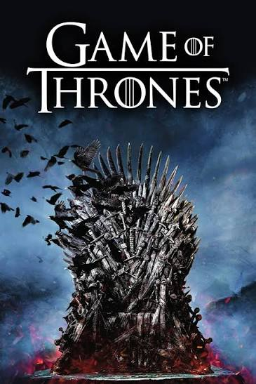

DESCRIÇÃO: Game of Thrones é uma das séries de televisão mais influentes do século XXI, criada por David Benioff e D. B. Weiss para a HBO. Baseada na saga literária A Song of Ice and Fire de George R. R. Martin, a série foi transmitida entre 2011 e 2019, somando 73 episódios ao longo de 8 temporadas. A trama passa-se nos continentes fictícios de Westeros e Essos, misturando intriga política, traição, dragões e a ameaça sobrenatural dos White Walkers (Zombies congelados que só morrem com o fogo)
Uma das melhores séries que já vi já que: